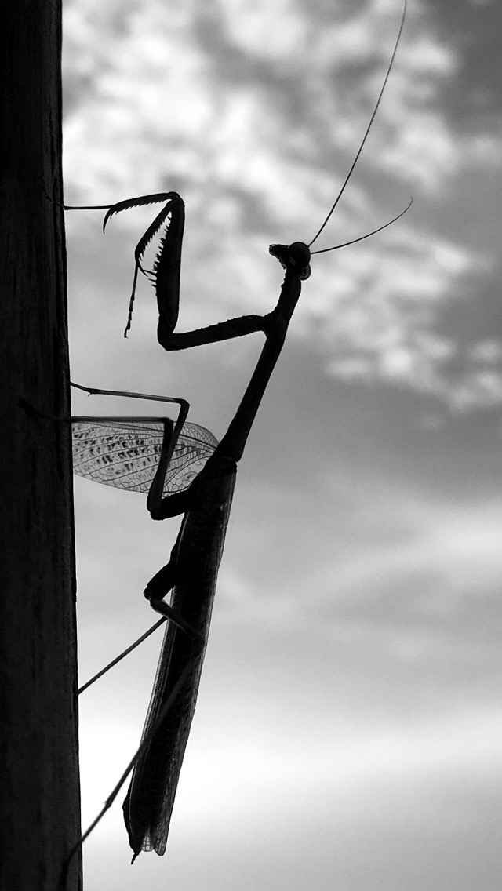

This is the launch page for my major netart project.The sentence that gave me my theme is "The environment holds some news, many not new." I interpreted this randomized sentence to mean that the environment, or our natural home, always has something to say. Our natural surroundings speak to us in the form of weather, climate change, or in the form of natural disasters. These natural disasters can be "breaking news" because of the damage they inflict, but the truth is that they have been happening for a long time. I hope to showcase a little bit of nature's language through my netart natural disasters.
